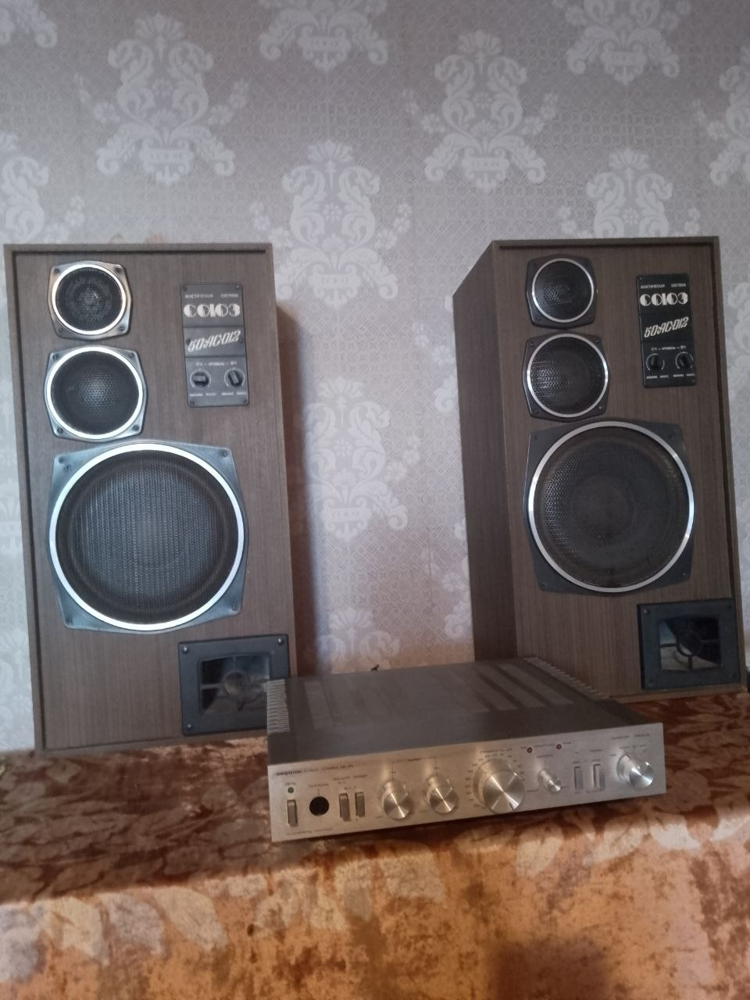

Якщо ви хоча б раз почуєте цей комплект у роботі — зрозумієте, чому подібну техніку не продають, а передають з рук у руки.
Ми пропонуємо легендарну акустику СОЮЗ 50АС-012 та підсилювач АМФИТОН-У-002 СТЕРЕО. Це не просто техніка, а справжня епоха якісного звуку, де кожен елемент був створений для максимального результату.
Чому цей комплект вартий уваги:
• Технічний стан: Колонки пройшли повну профілактику, замінено обвісні елементи. Підсилювач працює бездоганно.
• Звучання: Глибокий бас, щільна середина та кристально чисті високі частоти. Система створює масштабну звукову сцену, яку не здатні передати сучасні "пластикові" аналоги.
• Універсальність: Комплект ідеально розкриває рок, джаз, класику та живу музику.
Це вибір для тих, хто розуміє різницю між просто звуком і справжнім Hi-Fi. Легендарна техніка для цінителів чесного звучання.
